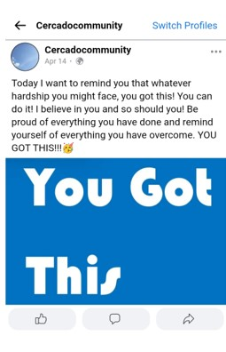
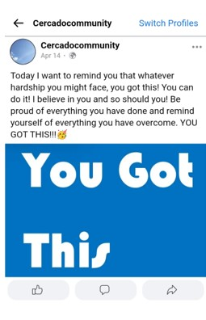

Marketing Evaluation
Context of Campaign & Promotional activities
My brand Cercado consists of a combination of two words: the first word Cerca which means being close to something whilst the other word is Cerrado which is a Spanish translation of closed. With my brand I want to portray that something that is closed does not mean it cannot open again. Our core message & vision is the following: “In a world where positivity seems out of reach, we try to survive and live throughout the entire day, as big the obstacles might seem, every bit of light can cause a sparkle to shine and dream.”
Furthermore I chose to make use of two social media platforms to promote my brand. I used Instagram and Facebook. There are multiple reasons why chose these platforms but the most important reason for me to use Instagram for example is that it is a well-known platform that is frequently used by my target audience, furthermore Instagram is also a platform that constantly changes and innovates, it is an attractive tool to promote your brand.
My objectives were the following:
1. I want to reach 25 followers on Instagram and
2. By the 15th of April I want to have a total amount of 100 likes on my page on Instagram.
Unfortunately I did not reach the intended amount of followers and likes I wanted.
Learning Points
Looking back at my Communication & Media plan I realized that I was way to enthusiastic. For example when I look at my objectives. I see that I wanted to reach 100 likes in total, but in reality I only received 47 likes in total on all my posts combined. Next to that I also wanted to have 25 followers on Instagram instead I ended up with 8 followers.
I have learned that gaining followers is not as easy as I hoped. I also believe that I should have used more hashtags to attract people. I made use of hashtags but not nearly enough. So this is a huge learning point for me and definitely something to note down and keep in mind.
Furthermore I wanted to have interaction on my platforms, but there was little to no response. I think that the first step would be attracting as many people as possible and to keep people coming back I could use quizzes, question stickers and other fun tools. With 8 followers and not so many visitors it is hard to expect and have interaction.
Next to that I have not looked enough at the current trends for example Instagram has become a reels based platform whereas I only posted 1 reel. I could have made more use of creating and putting out reels on my account.
I do think that my stories were funny and inspirational at least some of them. However I think I could have and should have posted more stories as well.
Last I also want to address that I made a few style changes. I created new cards with the core pillars of my brand, but instead of posting all of the cards in the same style. I only did this on Facebook, but since I already posted on Instagram in different styles I did not change or repost them. Maybe I should have to stay as consistent as possible.
One last point that occurs to me while writing this is that when I am looking back at my accounts, I can truly see the message and the positivity behind what I tried to display and portray, however it was not as structured/organized and maybe a bit chaotic.
Future Planning
When I look back I am proud of the texts that I shared on Facebook for example. Shot motivational texts. It is sad I didn’t post more, same goes for the posts on Instagram although I shared more and did more on Instagram. I would definitely recommend my future self to expand and post more to stay visible and create even more visibility.
In the future there are some things I should Improve in order to reach the amount of followers and likes I wanted too. First of all when looking back at all the learning points social media platforms are becoming more and more video/reels based platforms, they are constantly innovating and in order to make sure that you reach the people you want to, you have to adapt and implement the new tools. Making reels is something I would definitely do more in the future.
As mentioned above there are quite a few things that I would love to do differently in the future. First and foremost I should decide a style beforehand and not whilst starting to post. It can have a positive effect when you are truly involving your followers in the decision/style making process, but that is a different story. So in the future when changes occur, I would make sure that all the changes are still slightly consistent and fit right into the style that is already been displayed. This is important to avoid confusion.
Next to that in the future I would also post way more stories and also add a few more posts on the page itself. In my opinion I did not do this enough and I believe it is important to be as visible and stay as visible as possible.
Furthermore if I made use of reels as stated above, I think I would have had more visitors on my page. Be it on accident or because they truly are interested curious in my page. so in the future I would use this definitely more in the beginning so that I could encourage visitors into following and liking my page and brand.
If the campaign were to move forward I would immediately post the other “new cards” on Instagram with the pillars, this is very useful and important for the consistency of the page. I would also use more hashtags and find and write more inspirational stories. Lastly I would also post significantly more. What I have also learned after this assignment is that it is hard to stick to one plan, because sometimes you come up with new ideas or new creative outings, spur in the moment ideas. Maybe there should be room for example in the content calendar for these new ideas.
Proffesionalism
Here are screenshots of both the Facebook and Instagram page of Cercado.
Instagram
The first three screenshots include posts that have been posted on the page. the other three screenshots are stories I have posted. My logo another screenshot and profile photo of my
Instagram Facebook

 
